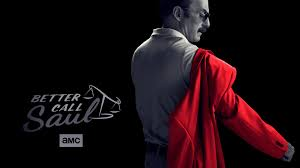

TV Shows

Better Call Saul is a prequel to the show "Breaking Bad" and is set in Albuquerque, New Mexico. It follows the ethical decline of an attorney named Jimmy Mcgill, a former con artisit who is later known as the criminal-defense attorney Saul Goodman. It is 6 seasons long and includes 63 episodes.

The Walking Dead takes place during a zombie apocalypse. The zombies in this series are referred to as "walkers". This show follows a group of survivors searching for safety while battling walkers and confronting other surviving groups. It is 11 seasons long and consists of 177 episodes.